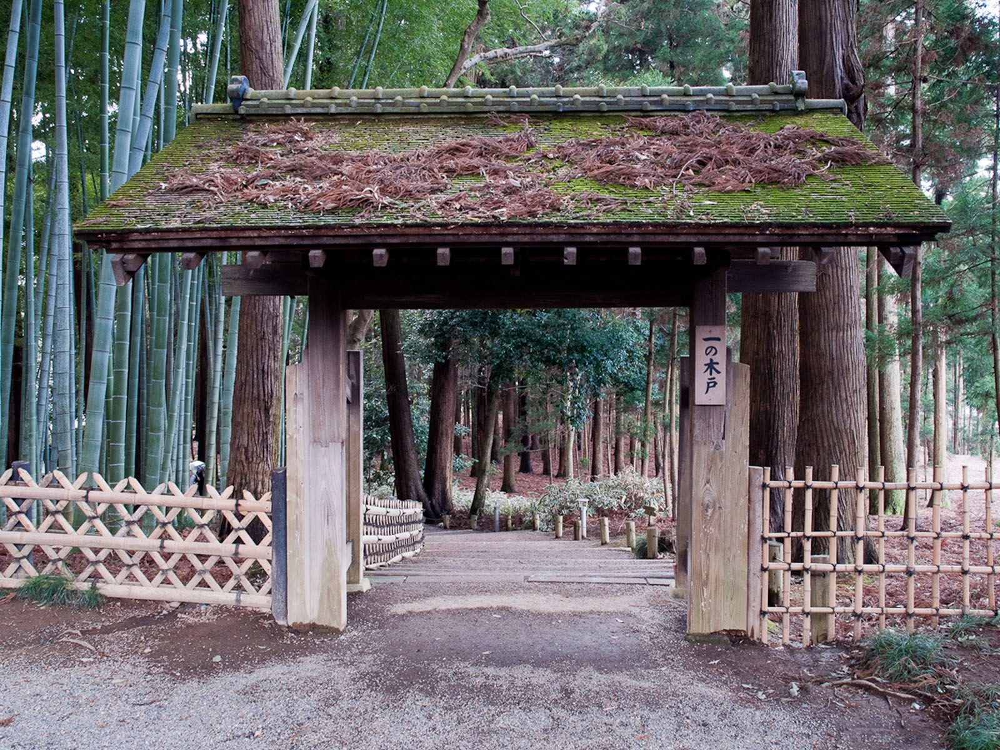

Embedded Courses

Embedded Courses
Wednesday, April 9, 2014
An Embedded Program is a short-term education abroad experience offered as a component or supplement to an academic course taught in residence on a Penn State campus. The Global Japan Project will support embedded programs for study of Japan, with Japan, and in Japan. This component of the project will allow us to teach courses with global perspectives on Japan in concert with partner institutions in Japan. Students enrolled in select courses at University Park will travel together from Penn State to visit their counterparts in Japan. These international visits will be accompanied by the course instructors. The group sessions with all members will build on the knowledge gained during the semester, and students will reflect together on the insights gained through collaborative work. The project supports the accommodation and food of all Penn State students enrolled in the embedded courses as well as the course instructor from Penn State and our partner institution’s instructor.
Our first embedded course will be led by Reiko Tachibana who will teach a course in Spring 2014 followed by a 10 day embedded component during Maymester of 2014.
This course is fully funded primarily by the Global Japan Project grant from the Japan Foundation with supplementary funds provided by the Pennsylvania Commonwealth Scholarship, Penn State’s Liberal Arts Enrichment Fund, and Penn State’s Center for Global Studies.